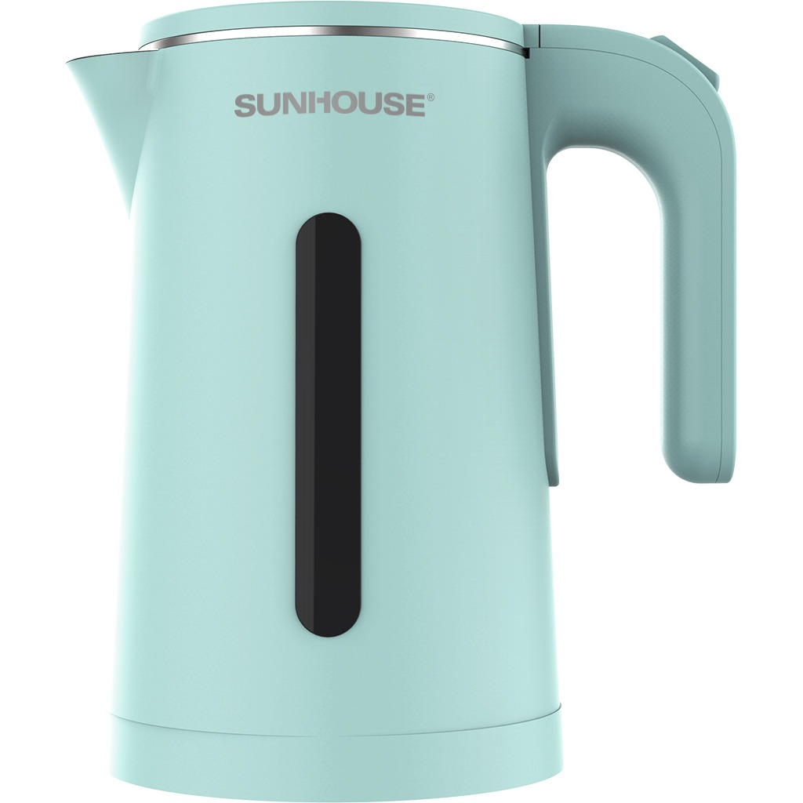
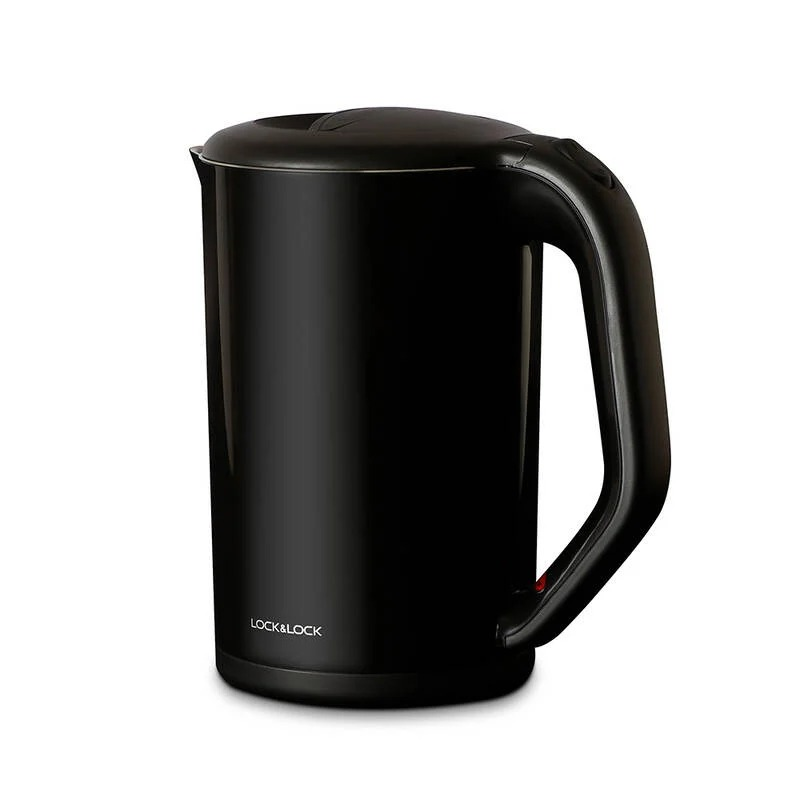
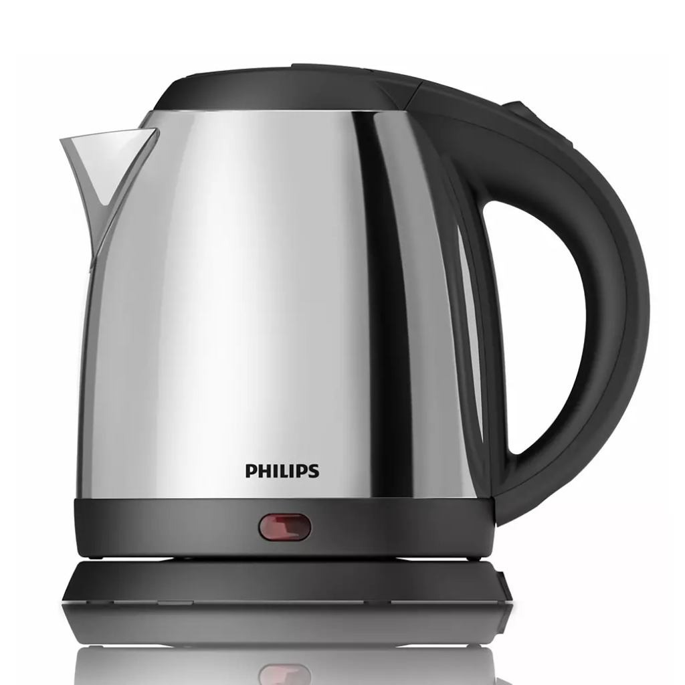
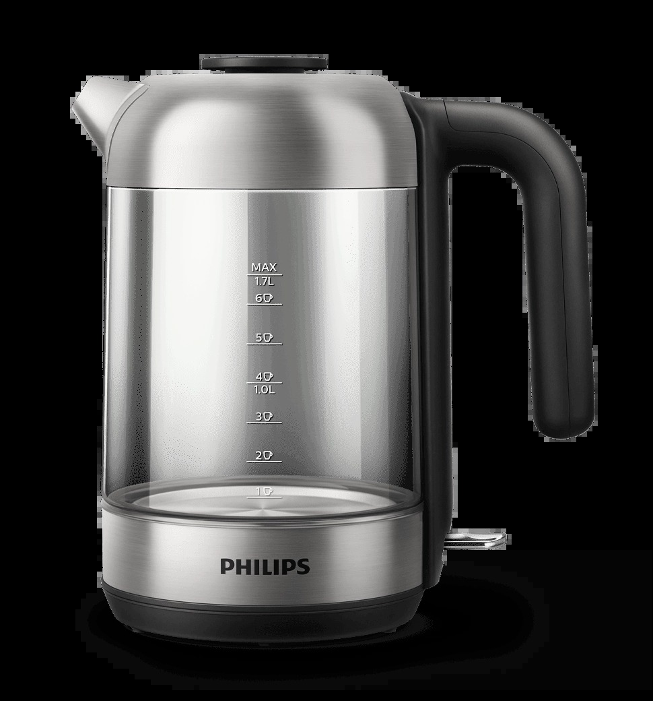
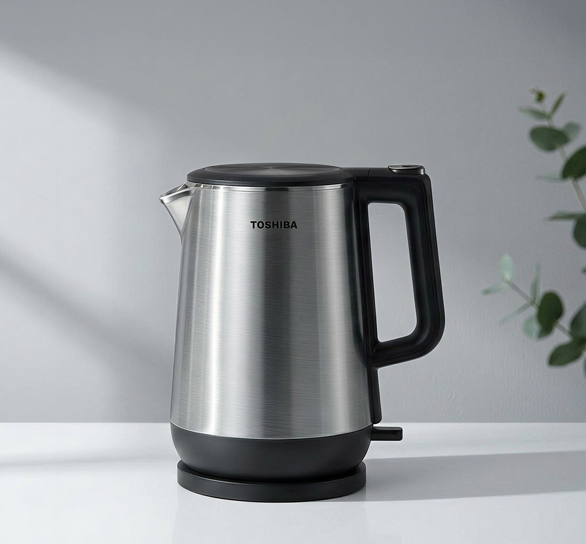

Ấm siêu tốc là món tưởng dễ mua nhất trong bếp, nhưng cũng là món dễ mua sai nhất. Ấm một lớp chạm vào là bỏng tay. Đế tiếp điện dỏm dùng vài tháng là chập chờn. Inox mỏng đun vài bữa đã bám cặn vàng, lau không sạch. Mua đúng một lần, dùng 5 năm không phải nghĩ. Mua sai, vài tháng sau lại đi mua cái mới, tính ra còn đắt hơn.
5 mẫu dưới đây mình lọc từ hàng chục mẫu đang bán, thông số đối chiếu từ ít nhất 2 nguồn bán lẻ, giá kiểm tra lại ngày 13/10/2026.
Cách chọn ấm siêu tốc trong 1 phút
Không cần nhớ nhiều, chỉ cần 6 gạch đầu dòng này khi đi mua:
- Dung tích 1.5–1.8L cho gia đình 3–5 người. Dưới 1.2L phải đun 2 lần mới đủ pha trà cả nhà.
- Công suất 1500–2200W. 1500W đun 1.5L mất 5–6 phút, 2200W nhanh hơn chừng 2 phút.
- Chất liệu phải ghi rõ: inox 304 hoặc thủy tinh chịu nhiệt. Ấm chỉ ghi "inox cao cấp" mà không nêu loại thì nên tránh.
- Ấm 2 lớp (ruột inox, vỏ nhựa cách nhiệt): nhà có trẻ con thì đây là tính năng đáng tiền nhất.
- Đế tiếp điện tốt: Strix của Đức là chuẩn phổ biến trên ấm chính hãng, xoay 360 độ.
- An toàn tối thiểu: tự ngắt khi sôi, chống đun cạn, chống quá nhiệt. Bảo hành 12 tháng là chuẩn, 24 tháng là điểm cộng lớn.
So sánh nhanh 5 mẫu
| # | Mẫu | Dung tích | Công suất | Chất liệu | Bảo hành | Giá tham khảo |
|---|---|---|---|---|---|---|
| 1 | Sunhouse SHD1351 | 1.8L | 1500W | 2 lớp: inox 304 + nhựa PP | 12 tháng | ~290–390k |
| 2 | Lock&Lock EJK738 | 1.7L | 1800W | 2 lớp: thép không gỉ + PP | 12 tháng | ~440–530k |
| 3 | Philips HD9306 | 1.5L | 1800W | Inox 304 | 24 tháng | ~550–650k |
| 4 | Philips HD9339/80 | 1.7L | 1850–2200W | Thủy tinh, mâm nhiệt inox 304 | 24 tháng | ~1–1.3tr |
| 5 | Toshiba KT-17DR1NV | 1.7L | 1800–2150W | Ruột inox 304 | 12 tháng | ~1.05–1.15tr |
1. Sunhouse SHD1351 — rẻ nhất mà vẫn an toàn

Giá tham khảo: khoảng 290.000–390.000đ (giá thay đổi theo đợt sale)
Đây là con ấm "ngon bổ rẻ" đúng nghĩa. 1.8L, 2 lớp (ruột inox 304, vỏ nhựa PP cách nhiệt), tự ngắt khi sôi, khi cạn, khi quá nhiệt, đế xoay 360 độ, bảo hành 12 tháng. Với tầm giá dưới 400k, hiếm có mẫu nào gom đủ chừng đó thứ.
Một lưu ý: nhiều shop ghi nhầm công suất con này là 1800W, nhưng 4 bảng thông số chi tiết mình đối chiếu đều ghi 1500W. 1500W vẫn đủ dùng, đun 1.5L mất khoảng 5–6 phút, chỉ chậm hơn loại 2200W chừng 2 phút.
- Rẻ nhất danh sách, dưới 400k
- 2 lớp chống bỏng, ruột inox 304
- Dung tích 1.8L, lớn nhất nhóm giá rẻ
- Thương hiệu Việt, dễ bảo hành
- 1500W đun chậm hơn loại 2200W
- Thiết kế đơn giản, vỏ nhựa dễ xước
Hợp với ai: mọi nhà, nhất là nhà có trẻ con cần ấm 2 lớp chống bỏng mà ngân sách eo hẹp.
Xem giá tốt nhất trên Shopee →2. Lock&Lock EJK738 — 2 lớp thương hiệu Hàn, giá tầm trung

Giá tham khảo: khoảng 440.000–530.000đ (chênh lệch lớn giữa các kênh, xem kỹ bên dưới)
Thêm khoảng 150k so với Sunhouse để đổi lấy thương hiệu Hàn và độ hoàn thiện cao hơn. 1.7L, 1800W, 2 lớp thép không gỉ và nhựa PP, công tắc cảm ứng hơi nước tự ngắt khi sôi, khóa nắp an toàn khi rót, đế xoay 360 độ, bảo hành 12 tháng.
Điểm cần lưu ý nhất là giá chênh lệch rất lớn giữa các kênh: hàng ngoài khoảng 440–500k, bản chính hãng ở gian hàng mall trên Shopee khoảng 533k. Đắt hơn chừng 20% nhưng yên tâm hàng thật, ấm siêu tốc là món bị làm nhái nhiều nên khoản chênh này theo mình là đáng.
- Thương hiệu Hàn, hoàn thiện đẹp
- Khóa nắp an toàn khi rót nước sôi
- 2 lớp cách nhiệt, giữ nóng lâu hơn
- 1800W đun nhanh
- Chênh giá lớn giữa các kênh, phải so giá kỹ
- Bản mall chính hãng đắt hơn hàng ngoài ~20%
Hợp với ai: người thích thương hiệu Hàn, muốn ấm 2 lớp đẹp hơn Sunhouse mà chưa tới tầm giá Philips.
Xem giá tốt nhất trên Shopee →3. Philips HD9306 — "quốc dân", mua là yên tâm

Giá tham khảo: khoảng 550.000–650.000đ (giá thay đổi theo đợt sale)
Con ấm bán chạy nhất của Philips ở Việt Nam nhiều năm nay, và có lý do. 1.5L, 1800W, vỏ và ruột đều inox 304, đế tiếp điện Strix của Đức xoay 360 độ, an toàn 4 chiều (chống đoản mạch, chống cạn, tự tắt khi sôi, tự tắt khi nhấc khỏi đế), lưới lọc chống cặn ở vòi. Nặng chỉ 0.8kg, nhẹ nhất danh sách.
Điểm ăn tiền nhất là bảo hành 24 tháng, gấp đôi chuẩn chung thị trường. Với món đồ dùng hàng ngày như ấm đun nước, 2 năm bảo hành chính là lời cam kết về độ bền. Nhược điểm đáng kể duy nhất: thân 1 lớp nên vỏ nóng khi đun, nhà có trẻ nhỏ thì cân nhắc mẫu 2 lớp ở trên.
- Bảo hành 24 tháng, dài nhất phân khúc
- Đế Strix bền, inox 304 thật
- Nhẹ nhất (0.8kg), dễ rót
- An toàn 4 chiều đầy đủ
- 1.5L hơi nhỏ cho nhà đông người
- Thân 1 lớp, vỏ nóng khi đun
- Giá gấp đôi Sunhouse SHD1351
Hợp với ai: người mua một lần dùng lâu, coi trọng bảo hành và thương hiệu hơn vài trăm nghìn chênh lệch.
Xem giá tốt nhất trên Shopee →4. Philips HD9339/80 — đẹp nhất bếp, vệ sinh dễ nhất

Giá tham khảo: khoảng 1.000.000–1.300.000đ (chênh lệch lớn giữa các kênh)
Thân thủy tinh chịu nhiệt 1.7L, nhìn được mực nước và cảnh nước sôi bên trong, đèn LED xanh dưới đế rất nịnh mắt buổi tối. Công suất 1850–2200W, đun nhanh nhất danh sách.
Điểm kỹ thuật đáng tiền nhất: mâm nhiệt inox 304 giấu kín dưới đáy, không tiếp xúc trực tiếp với nước nên ít bám cặn, vệ sinh chỉ cần tráng qua. Nắp tháo rời hoàn toàn, lưới lọc cặn 200 micron ở vòi rửa được. Đế Strix tuổi thọ khoảng 10.000 lần nấu, bảo hành 24 tháng. Nhược điểm hiển nhiên của thủy tinh: vỡ được, nhà có trẻ nhỏ hiếu động thì cân nhắc kỹ.
- Đẹp nhất, nhìn được nước sôi
- Mâm nhiệt giấu kín, vệ sinh dễ nhất
- 2200W đun nhanh nhất
- Bảo hành 24 tháng
- Thủy tinh vỡ được, cẩn thận với trẻ nhỏ
- Nặng 1.15kg, giá cao
- Chênh giá lớn giữa các kênh
Hợp với ai: người coi trọng thẩm mỹ bếp, thích nhìn mực nước rõ ràng và ghét cọ cặn ấm.
Xem giá tốt nhất trên Shopee →5. Toshiba KT-17DR1NV — cao cấp cho người kỹ tính

Giá tham khảo: khoảng 1.050.000–1.150.000đ (giá thay đổi theo đợt sale)
1.7L, công suất 1800–2150W, ruột inox 304, đế tiếp điện Strix xoay 360 độ, tự ngắt khi sôi và khi cạn, đèn báo hoạt động. Điểm đặc biệt mà 4 mẫu trên không có: lưới lọc bã trà đi kèm, ai hay pha trà mạn, trà xanh thì tiện hẳn, không cần phễu lọc riêng.
Hoàn thiện chắc chắn đúng chất đồ Nhật, nhưng có 2 điểm trừ phải nói thẳng. Thứ nhất, nặng 1.46kg, nặng nhất danh sách. Thứ hai, bảo hành chỉ 12 tháng trong khi giá ngang Philips HD9339 được bảo hành 24 tháng. Ngoài ra theo thông số Nguyễn Kim, vỏ ngoài là inox 201 (ruột mới là 304), nên lau chùi kỹ sau khi dùng để tránh ố.
- Thương hiệu Nhật, độ bền có tiếng
- Lưới lọc bã trà, tiện cho người hay pha trà
- Đế Strix, hoàn thiện chắc chắn
- Nặng nhất (1.46kg)
- Bảo hành 12 tháng, ngắn hơn Philips cùng tầm giá
- Vỏ ngoài inox 201, cần lau kỹ tránh ố
Hợp với ai: người trung thành với đồ Nhật, hay pha trà và muốn một con ấm dùng 5–7 năm.
Xem giá tốt nhất trên Shopee →Mua ở đâu để không dính hàng giả?
Ấm siêu tốc, nhất là Philips, là món bị làm nhái khá nhiều vì nhìn bề ngoài khó phân biệt. Mấy nguyên tắc của mình: chỉ mua ở gian hàng chính hãng (Shopee Mall, LazMall) hoặc siêu thị điện máy lớn, đừng ham rẻ hơn 30–40% giá thị trường; kiểm tra tem bảo hành và mã sản phẩm khi nhận hàng; cân thử, ấm 1.7–1.8L thật nặng khoảng 1–1.5kg cả đế, cầm lên nhẹ hều thì nên trả hàng; và để ý đế tiếp điện, hàng thật tiếp xúc chắc chắn, xoay trơn tru, hàng nhái thường lỏng lẻo, cắm lúc được lúc không.
Các nút "Xem giá" hiện dẫn tới kết quả tìm kiếm Shopee theo đúng tên + mã sản phẩm (blog đang chờ Shopee duyệt affiliate) — bạn tự chọn gian hàng chính hãng (Shopee Mall) trong kết quả trước khi mua nhé.
Cách mình chấm điểm (công khai)
| Tiêu chí | Trọng số |
|---|---|
| Chất liệu & an toàn (inox 304, tự ngắt, chống cạn) | 30% |
| Độ bền & thương hiệu (đế tiếp điện, bảo hành) | 25% |
| Dung tích & công suất | 20% |
| Giá so với những gì nhận được | 15% |
| Tiện ích thêm (lọc trà, đèn LED, khóa nắp) | 10% |
Điểm mỗi sản phẩm là trung bình có trọng số theo các tiêu chí trên, dựa trên đánh giá thật của người mua và thông số hãng công bố.
Kết luận: nên mua loại nào?
- Ngon, bổ, rẻ — nhà có trẻ con: Sunhouse SHD1351, 2 lớp chống bỏng mà chưa tới 400k.
- Thích thương hiệu Hàn, hoàn thiện đẹp: Lock&Lock EJK738, nhớ mua bản mall cho yên tâm.
- Mua một lần dùng lâu, bảo hành dài: Philips HD9306, 24 tháng bảo hành nói thay mọi lời quảng cáo.
- Thích đẹp, ghét cọ cặn: Philips HD9339/80 thủy tinh, mâm nhiệt giấu kín vệ sinh dễ nhất.
- Kỹ tính, hay pha trà: Toshiba KT-17DR1NV, có lọc bã trà đi kèm.
Quy tắc nhanh: nhà 3–5 người thì 1.5–1.7L là vừa, có trẻ nhỏ thì bắt buộc chọn ấm 2 lớp, và đừng mua ấm không ghi rõ loại inox.
Câu hỏi thường gặp
Ấm 2 lớp có thật sự cần thiết không?
Vỏ ngoài ấm 2 lớp mát hơn hẳn khi nước đang sôi. Nhà có trẻ con thì đáng tiền. Nhà chỉ có người lớn, dùng cẩn thận thì ấm 1 lớp vẫn ổn.
Inox 304 và inox 201 khác nhau thế nào?
Inox 304 chống gỉ tốt hơn và an toàn thực phẩm hơn, là chuẩn nên có ở ruột ấm. Ấm nào không ghi rõ loại inox thì nên tránh.
Đun nước nhiều lần trong ngày có tốn điện không?
Không đáng lo. Một lần đun 1.5L tốn khoảng 0.1 số điện, chừng 300 đồng. Đun 5 lần một ngày cũng chỉ khoảng 1.500 đồng.
Vì sao ấm mới mua có mùi khét?
Mùi nhựa mới và lớp bảo vệ trong quá trình sản xuất. Đun 2–3 ấm nước đầu rồi đổ đi là hết. Sau một tuần vẫn khét thì mang đi bảo hành.
Bao lâu nên vệ sinh cặn vôi một lần?
Nước máy ở Việt Nam khá nhiều cặn, nên 1–2 tháng ngâm giấm hoặc chanh một lần. Cặn dày làm ấm đun chậm và tốn điện hơn.